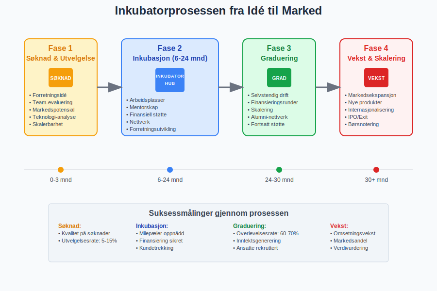
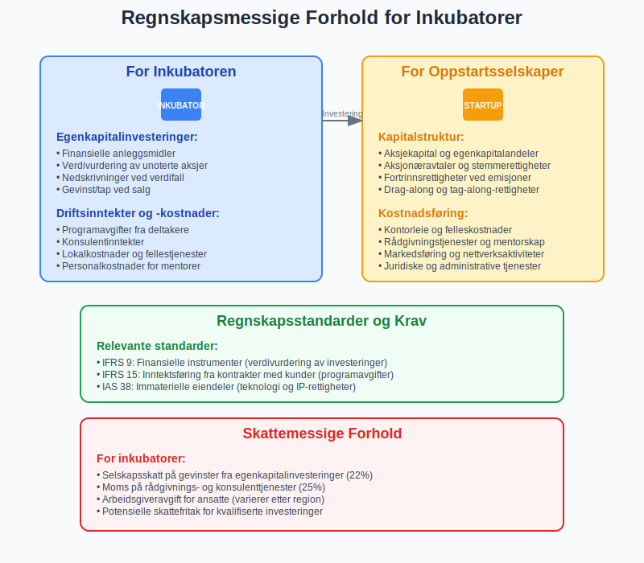
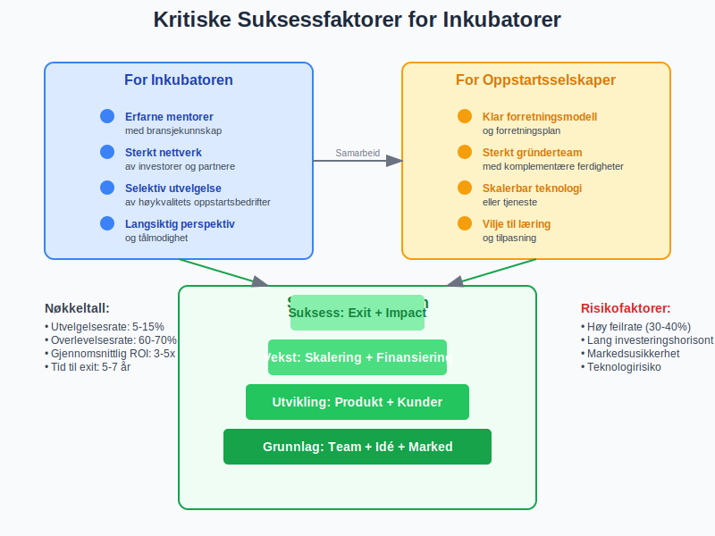
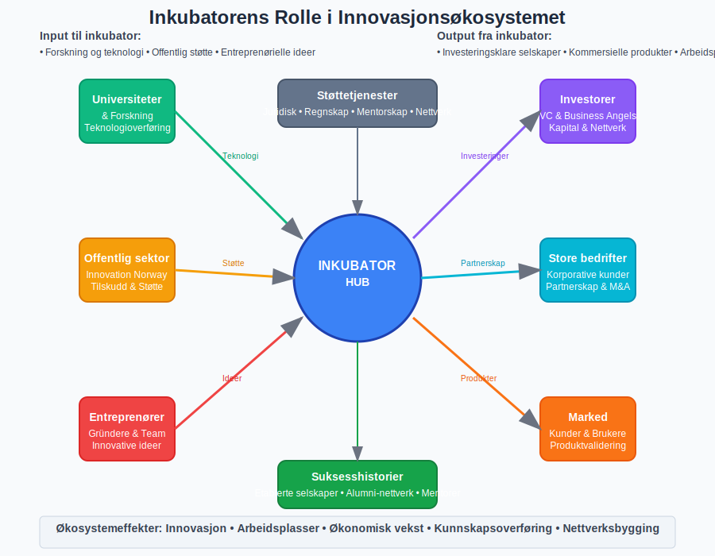

En inkubator er en organisasjon som støtter oppstartsselskaper og entreprenører gjennom de kritiske tidlige utviklingsfasene. Inkubatorer tilbyr en kombinasjon av finansiering, rådgivning, arbeidsplasser og nettverk for å øke sannsynligheten for at nye bedrifter skal lykkes.

Definisjon av Inkubator
En bedriftsinkubator er en organisasjon designet for å akselerere vekst og suksess for oppstartsselskaper gjennom en rekke forretningsstøtteressurser og tjenester. Disse kan inkludere:
- Fysisk arbeidsområde og kontorfasiliteter
- Finansiell støtte og tilgang til investorer
- Mentorskap og forretningsrådgivning
- Nettverk av bransjekontakter og partnere
- Teknisk støtte og infrastruktur
- Juridisk og regnskapsmessig veiledning
Historisk Perspektiv
Det første inkubatorprogrammet ble etablert i 1959 i Batavia, New York. I Norge har inkubatorbevegelsen vokst betydelig siden 1990-tallet, med støtte fra både offentlige og private aktører.

Typer Inkubatorer
Offentlige Inkubatorer
Offentlig finansierte inkubatorer drives ofte av:
- Kommuner og fylkeskommuner
- Universiteter og høyskoler
- Innovasjon Norge og andre statlige organer
- EU-programmer og internasjonale initiativ
Disse fokuserer typisk på:
- Regional utvikling og arbeidsplasser
- Teknologioverføring fra forskning
- Samfunnsnytte og bærekraft
- Langsiktig verdiskaping
Private Inkubatorer
Privatdrevne inkubatorer opererer med kommersielle mål:
- Venture capital-selskaper med egne inkubatorprogrammer
- Korporative inkubatorer drevet av store selskaper
- Uavhengige kommersielle inkubatorer
- Akseleratorer med intensivprogrammer

Inkubatorprosessen
Fase 1: Søknad og Utvelgelse
Inkubatorer har typisk en konkurransebasert utvelgelsesprosess:
- Forretningsidé-evaluering og markedspotensial
- Team-vurdering og entreprenørielle ferdigheter
- Teknologi-analyse og konkurransefortrinn
- Skalerbarhet og vekstpotensial
Fase 2: Inkubasjon (6-24 måneder)
Under inkubasjonsperioden får oppstartsselskaper:
- Arbeidsplasser i delte kontormiljøer
- Mentorskap fra erfarne entreprenører
- Forretningsutvikling og strategisk rådgivning
- Nettverk og bransjekontakter
- Finansiell støtte og investorkontakt
Fase 3: Graduering og Videreutvikling
Etter endt inkubasjon:
- Etablering som selvstendig foretak
- Finansieringsrunder og investoravtaler
- Skalering av forretningsmodellen
- Fortsatt støtte gjennom alumninettverk

Finansieringsmodeller
Egenkapitalbasert Finansiering
Mange inkubatorer tar egenkapitalandeler i oppstartsselskaper:
| Egenkapitalandel | Typisk Støtte | Varighet | Forventet Avkastning |
|---|---|---|---|
| 5-10% | Arbeidsplasser + Mentorskap | 12-18 mnd | Moderat |
| 10-20% | Kapital + Intensiv støtte | 6-12 mnd | Høy |
| 20%+ | Betydelig kapital + Nettverk | 12-24 mnd | Svært høy |
Alternative Finansieringsmodeller
- Avgiftsbaserte programmer uten egenkapitalkrav
- Offentlig støtte gjennom tilskudd og lån
- Crowdfunding og alternative finansieringsformer
- Korporative sponsorater og partnerskap
Regnskapsmessige Forhold
For Inkubatoren
Inkubatorer må håndtere komplekse regnskapsmessige forhold:
Egenkapitalinvesteringer
- Finansielle anleggsmidler - investeringer i porteføljeselskaper
- Verdivurdering av unoterte aksjer og andeler
- Nedskrivninger ved verdifall
- Gevinst/tap ved salg av egenkapitalandeler
Driftsinntekter og -kostnader
- Programavgifter fra deltakende selskaper
- Konsulentinntekter og rådgivningstjenester
- Lokalkostnader og fellestjenester
- Personalkostnader for mentorer og rådgivere
For Oppstartsselskaper
Deltakelse i inkubator påvirker oppstartselskapets regnskap:
Kapitalstruktur
- Aksjekapital og egenkapitalandeler
- Aksjonæravtaler og stemmerettigheter
- Fortrinnsrettigheter ved fremtidige emisjoner
- Drag-along og tag-along-rettigheter
Kostnadsføring
- Kontorleie og felleskostnader
- Rådgivningstjenester og mentorskap
- Markedsføring og nettverksaktiviteter
- Juridiske og administrative tjenester

Juridiske Rammeverk
Selskapsformer for Inkubatorer
Inkubatorer kan organiseres som:
- Aksjeselskap (AS) - mest vanlig for kommersielle inkubatorer
- Stiftelser - for ideelle og samfunnsnyttige formål
- Foreninger - for medlemsdrevne initiativ
- Offentlige institusjoner - for statlige og kommunale programmer
Regulatoriske Krav
Finanstilsynets Regelverk
- Verdipapirhandel og investeringsvirksomhet
- Forvaltning av andres midler
- Prospektplikt ved offentlige tilbud
- Rapporteringsplikt for større investeringer
Skattemessige Forhold
- Selskapsskatt på gevinster fra egenkapitalinvesteringer
- Moms på rådgivnings- og konsulenttjenester
- Arbeidsgiveravgift for ansatte
- Skattefritak for kvalifiserte investeringer
Suksessfaktorer
For Inkubatoren
- Erfarne mentorer med bransjekunnskap
- Sterkt nettverk av investorer og partnere
- Selektiv utvelgelse av høykvalitets oppstartsbedrifter
- Langsiktig perspektiv og tålmodighet
- Diversifisert portefølje for risikospredning
For Oppstartsselskaper
- Klar forretningsmodell og forretningsplan
- Sterkt gründerteam med komplementære ferdigheter
- Skalerbar teknologi eller tjeneste
- Definert målmarked og kundesegment
- Vilje til læring og tilpasning

Utfordringer og Risiko
Vanlige Utfordringer
For Inkubatorer
- Høy feilrate - mange oppstartsbedrifter mislykkes
- Lang investeringshorisont før avkastning
- Begrenset likviditet i egenkapitalinvesteringer
- Konkurranse om de beste oppstartsprosjektene
For Oppstartsselskaper
- Tap av kontroll gjennom egenkapitalavgivelse
- Avhengighet av inkubatorens nettverk og ressurser
- Tidspress og intensive programmer
- Potensielle interessekonflikter med andre porteføljeselskaper
Risikostyring
- Due diligence og grundig evaluering
- Diversifisering av investeringsportefølje
- Klare avtaler og forventningsavklaringer
- Kontinuerlig oppfølging og støtte
- Exit-strategier og likviditetsplanlegging
Inkubatorer i Norge
Ledende Inkubatorer
Offentlige Aktører
- NTNU Technology Transfer - teknologioverføring
- Universitetet i Oslo - forskningsbaserte oppstartsbedrifter
- Innovation Norway - nasjonale programmer
- Regionale inkubatorer - lokale initiativ
Private Aktører
- StartupLab - Nordens største akselerator
- Techstars - internasjonalt program i Oslo
- Antler - global early-stage VC og inkubator
- Katapult - impact-fokuserte programmer
Statistikk og Resultater
| Periode | Antall Inkubatorer | Oppstartsbedrifter | Overlevelsesrate | Total Finansiering |
|---|---|---|---|---|
| 2018-2020 | 45 | 1,200 | 65% | 2.5 mrd NOK |
| 2021-2023 | 52 | 1,800 | 68% | 4.2 mrd NOK |

Fremtidige Trender
Teknologiske Utviklinger
- Digitale plattformer for remote inkubasjon
- AI og maskinlæring for bedre utvelgelse
- Blockchain for transparente investeringsavtaler
- Virtual reality for immersive mentorskap
Bærekraft og Impact
- ESG-fokus og samfunnsansvar
- Sirkulær økonomi og grønne løsninger
- Sosial entreprenørskap og inkludering
- FN-bærekraftsmål som styrende prinsipper
Finansieringsutvikling
- Crowdfunding og alternative finansieringsformer
- Kryptovaluta og tokenisering
- Offentlig-private partnerskap (OPP)
- Internasjonale investeringsfond
Praktiske Råd
For Entreprenører
Før Søknad
- Utvikle en solid forretningsplan
- Bygg et sterkt team med komplementære ferdigheter
- Valider forretningsideen gjennom markedsundersøkelser
- Forbered finansielle prognoser og kapitalbehov
Under Inkubasjon
- Vær åpen for feedback og konstruktiv kritikk
- Utnytt nettverket aktivt og bygg relasjoner
- Fokuser på kundetrekking og inntektsgenerering
- Dokumenter læring og iterasjoner
Etter Graduering
- Oppretthold kontakt med inkubatorens nettverk
- Planlegg neste finansieringsrunde i god tid
- Vurder foretaksform og juridisk struktur
- Implementer robuste regnskapssystemer
For Investorer
Evaluering av Inkubatorer
- Track record og historiske resultater
- Kvalitet på mentorer og rådgivere
- Nettverk og bransjekontakter
- Investeringsfilosofi og -strategi
Due Diligence
- Finansielle rapporter og regnskapsanalyse
- Porteføljesammensetning og diversifisering
- Ledelse og organisasjonsstruktur
- Regulatorisk compliance og risikostyring
Konklusjon
Inkubatorer spiller en kritisk rolle i det norske innovasjonsøkosystemet ved å støtte oppstartsselskaper gjennom de mest sårbare fasene. For entreprenører tilbyr de verdifull finansiering, mentorskap og nettverk, mens investorer får tilgang til kurerte investeringsmuligheter med profesjonell oppfølging.
Suksess i inkubatorsammenheng krever grundig forberedelse, åpenhet for læring og langsiktig perspektiv fra alle parter. Med riktig tilnærming kan inkubatorer være en kraftfull katalysator for innovasjon og verdiskaping.
For oppstartsselskaper som vurderer inkubatorprogrammer, er det viktig å forstå både mulighetene og forpliktelsene som følger med. Dette inkluderer regnskapsmessige konsekvenser, juridiske forhold og strategiske implikasjoner for fremtidig vekst og finansiering.
